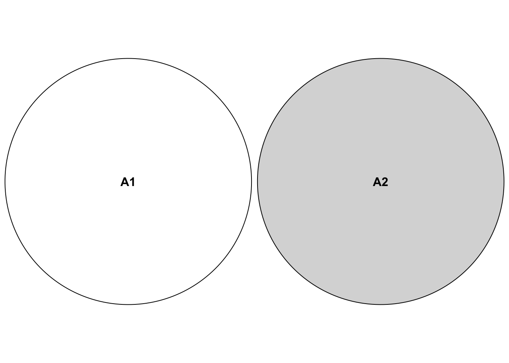
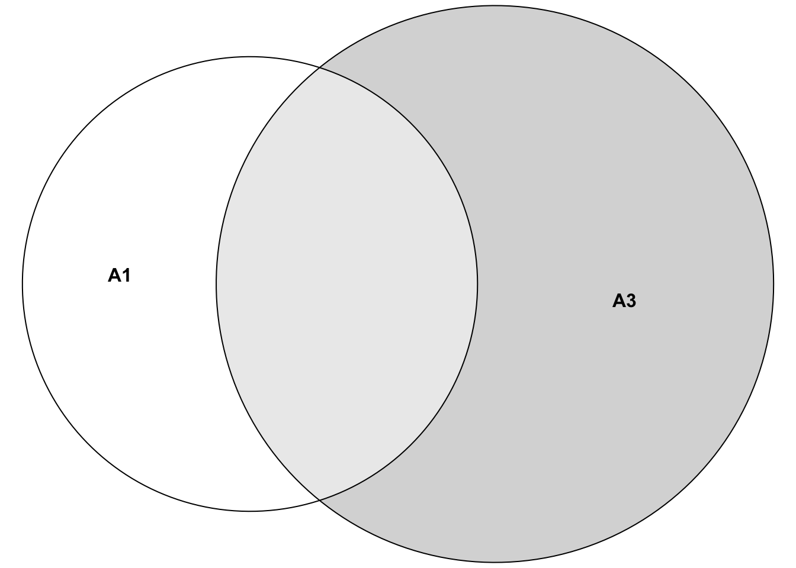
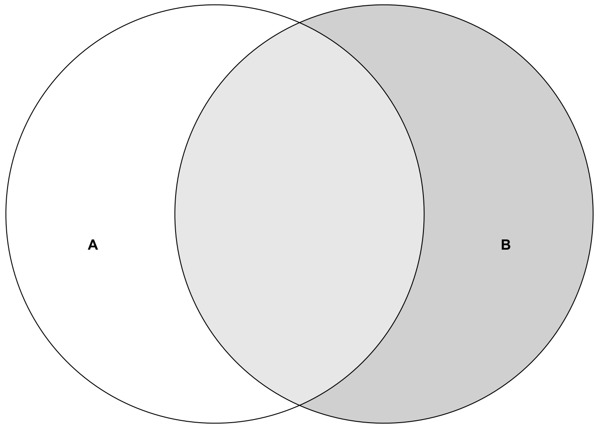
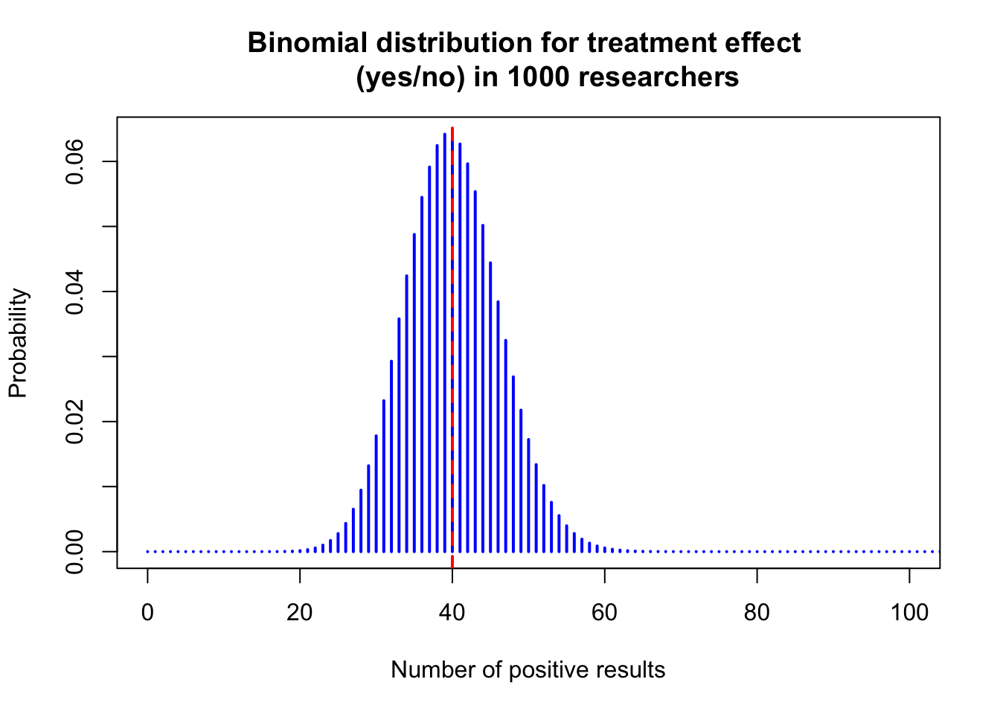
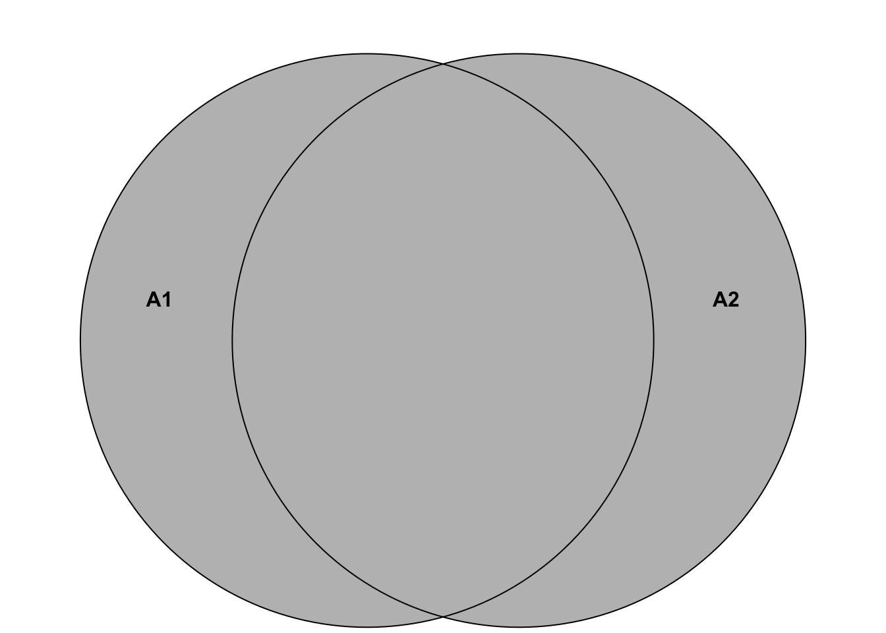
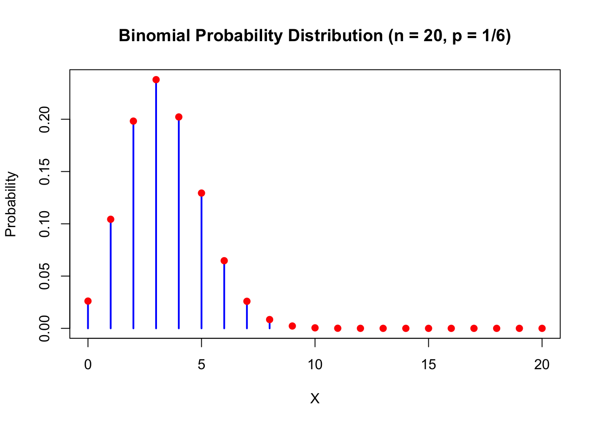

Chapter 2 Probability
Probability is a measure of the likelihood that an event will occur. Probability is quantified as a number between 0 and 1 (or 0 to 100%), where 0 indicates impossibility and 1 indicates certainty, although we will see later that a probability of 0 does not necessarily mean that such an event can never occur. The higher the probability of an event, the more likely it is that the event will occur.
Why is probability important in our field of study (applied health sciences)?
Quantative research methods (often a code name for statistics) use probability theory to make statements about a larger population or a data generating process (DGP), as it should be more appropriately called.
In observational studies, we often make statements about associations between variables.
In experimental studies (e.g., a randomized controlled trial), we often try to make statements about the effect of an intervention on a certain outcome - for instance if a therapy lowers pain by at least 1 point better compared to usual therapies.
Probability theory has its roots in gambling and betting. Blaise Pascal wrote a letter to Pierre de Fermat in 1654 when a French essayist Antoine Gombaud, intrigued by gambling, sought to solve “the problem of points,” first posed by Luca Paccioli in 1494. The problem asked how to fairly divide the winnings if a game is interrupted before its conclusion. Gombaud approached mathematician Blaise Pascal, who collaborated with Pierre de Fermat. Together, they laid the groundwork for modern probability theory. Fermat’s method involved listing all possible outcomes and calculating each player’s chance of winning, while Pascal developed a backward induction algorithm to assign probabilities. Their work revolutionized mathematics and influenced fields like economics and actuarial science.
Philosophically speaking, we could distinguish between two flavors of probability: Probabilities for events that are repeatable respectively have already happened, and probabilities for events that haven’t happened yet.
An example for a repeatable event is getting a 6 when throwing a fair die. We can do this experiment right now by fetching a die and throwing it.
An example for the latter is the probability of a patient dying within the next 5 years after a certain diagnosis. It is hard to argue that this experiment would be repeatable under (almost) identical conditions since every patient is different whereas the dice are typically much more similar. Here, we could at least put forward that other similar patients have a certain proportion of dying within 5 years.
There are of course events that have not happend ever before, like the creation of artificial general intelligence (AGI). Nevertheless, one can still try to assign probabilities when such an event would happen.
2.1 Frequentist vs. Bayesian statistics
There are two main schools of thought in statistics: Frequentist and Bayesian. Often one hears that there is a “war” between the two.
It is not our place to say which one is better. Both have their strengths and weaknesses and are used in different contexts.
I would consider the rapant misuse of \(p\)-values and the cookbook-like application of frequentist statistics as a weakness of this approach (in its widely used form at least). Of course, this is not the method’s fault but the fault of the user.
Bayesian statistics is often considered more intuitive and flexible. It is also more computationally demanding and requires prior knowledge which is argued to be subjective. Computation time is sometimes still an issue in comparison for instance in regression modelling when using an end user laptop. It is also argued that for large sample size frequentist and Bayesian statistics converge to the same result.
There are very smart proponents on both sides and we will try to use and contrast both techniques throughout this script whenever convenient.
Especially one of the early eminent statisticians, Ronald Fisher, was an oponent of Bayesian statistics, or as he called it: “inverse probability”.
The only thing we are interested in is the practical application of both methods in the field of applied health sciences. How well can we describe data and make predictions, how well can we learn from data in our field?
2.1.1 Frequentist statistics
Frequentist statistics is based on the idea that probability is the long-run frequency of events. For instance, if I throw a fair die 1000 times, the frequency of getting a 3 is (approximately) \(\frac{1}{6}\). In the limit, if I throw the die infinitely many times, the frequency of getting a 3 will converge to \(\frac{1}{6}\). In mathematical notation, we would write
\[ \mathbb{P}(\text{getting a 3}) = \lim_{n \to \infty} \frac{\text{Number of 3s in } n \text{ throws}}{n} = \frac{1}{6}, \]
where \(\mathbb{P}\) is the probability measure which we will define more formally later (see Exercise 1).
More genereally, in frequentist statistics, we are looking for a fixed but unknown parameter from an underlying data generating process (DGP). In the dice example, the process of repeatedly throwing the die is the data generating process. Basically, we could estimate the parameter of interest arbitrarily well by reapeated drawing from the DGP if we had enough data.
Example: Throw your (fair or unfair) die often enough and you will get a good estimate of the probability of getting a 3.
Example: We could try to estimate the mean birth weight of all babies from smoking parents born in Switzerland in 2022. We would draw a (random) sample of birthweights and calculate the mean. With a sample large enough, we could estimate this parameter fairly well. With all birthweights, we would know the true mean of the population of interest (for that year alone).
2.1.2 Bayesian statistics
Bayesian statistics, on the other hand, is based on the idea that probability is a measure of our uncertainty about an event or a parameter. Here, we use prior (i.e., before/outside of our experiment) knowledge about a parameter and update this knowledge with new data using the famous Bayes’ theorem:
\[ p(\theta | \text{data}) = \frac{p(\text{data} | \theta) \cdot p(\theta)}{p(\text{data})}, \]
where:
\(p(\theta | \text{data})\) is the posterior probability: the updated probability of the parameter \(\theta\) given the observed data.
\(p(\text{data} | \theta)\) is the likelihood: the probability of observing the data given a certain value of the parameter \(\theta\).
\(p(\theta)\) is the prior probability: the initial belief about the parameter \(\theta\) before seeing the data.
\(p(\text{data})\) is the marginal likelihood or evidence: the probability of observing the data under all possible parameter values.
2.1.2.1 Example in applied health sciences (physiotherapy)
Suppose you’re a physiotherapist trying to estimate the probability that a new therapy improves the mobility of patients with chronic back pain (Improvement Yes/No). You already have some prior knowledge (based on previous studies or expert opinions) that suggests the therapy works for 30% of patients. This is your prior knowledge: \(\theta = 0.30\), where \(\theta\) is the probability that the therapy is effective. Your colleagues are not convinced and argue that the probability is 40%. Now, you run a small trial with 50 patients and observe that 22 of them showed a clinically relevant improvement in mobility (self-reported from the patient). This new data (the result of the trial) updates your belief about the effectiveness of the therapy. Using Bayes’ theorem (Exercise 2), you combine the prior knowledge \(\theta = 0.30\) with the likelihood of the new data \(p(\text{data} | \theta)\), and you calculate the posterior probability, \(p(\theta | \text{data})\), which reflects your updated belief about the effectiveness of the therapy after observing the trial data. We could assign the probability of \(\theta = 0.3\) or \(\theta = 0.4\) equally: \(p(\theta = 0.3) = p(\theta = 0.4) = 0.5.\)
Bayesian analysis allows you to update your estimates as new evidence becomes available, providing a flexible framework for decision-making in health sciences.
2.2 Foundations of probability theory
We need to know some basic concepts of probability theory in order to dive in deeper. We will try to introduce them playfully and find formality as we go along. As stated above, in the frequentist sense, we are interested in the long-run frequency of events. How often does an event occur if we repeat the random experiment many times?
Let’s imagine we are in a research department with 1000 researchers all trying to answer the same question: Does the new physiotherapy work (e.g., reduce pain by 1 point better than the usual treatment)? Let’s assume (unrealistically) that they are all working on this one question and they are not talking about their experiments or their research methodology to each other (assumption of independence). The statistician in the department has calculated (due to the variability of such treatment effects in the relevant population and theoretical considerations) that even under the assumption of the therapy is not working at all - which we will assume for the time being - , one would see an effect just by chance in 4% of the study results.
What would be considered a discovery under these cicumstances?
We now conduct an experiment. All 1000 researchers are conducting a study with 50 patients to answer the same question. This is our random experiment (instead of throwing dice). Instead of throwing a fair die, we do a round of “research” with 1000 researchers. You as observer give the assignment to the researchers and come back as soon as all 1000 researeches have finished their experiments. Again, the are not taking to each other and we can (unrealistically) assume that their results will be not influenced by each other.
Now we could ask different questions:
2.2.1 Questions about the 1000 researcher-experiment (among many others):
- If you had to bet, how many experiments showed a treatment effect if you assume that the therapy is not working at all?
- If you get 137 results showing a treatment effect, would you be surprised? Would you reject the assumption, that the therapy is not working at all? Why?
- How many experiments (would you expect) showed a treatment effect if you assume that the therapy is “working” (positive result by chance) in 12% (instead of 4%) of the patients?
- Assuming that you have 47 results showing a treatment effect and your marketing lead is asking you to write a press release stating that 47 out of 50 studies showed a treatment effect. What is the problem?
- Assuming one very motivated researcher has tested 65 (secondary) hypotheses in her experiments and found 4 results that are difficult to explain by chance alone. What is the problem?
- Suppose there are many large research departments in the world with 1000 researchers. How strongly would the number of positive results vary between these large departments?
We will try to answer these questions below.
First, it seems intuitive that Probability within an experiment should add up if the events are disjoint. The event \(A_1=\) “only researcher 45 gets a positive result” and \(A_2=\) “only researcher 897 gets a positive result” are mutually exclusive. If only researcher 45 finds an effect, then researcher 897 does not find an effect and vice versa. They cannot happen at the same time within that one experiment. Hence, the two events are said to be disjoint. If we add up the probabilities of all mutually exclusive events, we should get 1, or 100%. We say that the probability of all elementary events (called \(\omega\)) sums to 1. Let’s look at a Venn diagram to illustrate the concept of being mutually exclusive (disjoint).

Again, this refers to being mutually exclusive within our 1000-researcher experiment. Both events cannot happen at the same time in this context, so we assign \(0\) to the event that both occur simultaneously: \(\mathbb{P}(A_1 \cap A_2)=0\). The \(\cap\)-Symbol refers to all elementary events that are in both sets. In our case we have the sets
\[A_1 = \{ (\dots ,R_{45} = pos, \dots ,R_{897} = neg, \dots) \}\]
\[and\]
\[A_2 = \{ (\dots ,R_{45} = neg, \dots , R_{897} = pos, \dots) \}.\]
An example of non-disjoint events (within our 1000-researcher experiment) would be the event \(A_1=\) “only researcher 45 gets a positive result” and the event \(A_3=\) “only researcher 45 or only reasearcher 67 gets a positive result”. Which researchers got a positive result in both events? The answer is: Researcher 45. Hence, the two events are said to be non-mutually exclusive. We can’t just add up the probabilities (of events \(A_1\) and \(A_3\)) here, since we would count the probability of researcher 45 twice. The sets look like this:
\[A_1 = \{ (\dots ,R_{45} = pos, \dots) \}\]
\[and\]
\[A_3 = \{ (\dots ,R_{45} = pos, \dots), (\dots ,R_{67} = pos, \dots) \}.\]

How many elementary events are in the set of all possible outcomes of our 1000-researcher experiment? For every researcher, there are two possible outcomes: positive or negative result. Hence, we have \(2 \cdot 2 \cdot 2 \cdots = 2^{1000}\) elementary events in our set of all possible outcomes. This is a very large number (\(\sim 10^{300}\)) - more than there are particles in the universe (\(\sim 10^{80}\)).
We call the set of all elementary events \(\Omega\) (the Greek letter Omega): \[\Omega = \{ \omega_1, \omega_2, \cdots, \omega_{2^{1000}} \}.\]
Note, that we collect elementary events to form events like we just did for event \(A_3\).
Note, that the \(2^{1000}\) elementary events in the 1000 researcher experiment are also disjoint. Why? For every elementary event, certain researchers found something and others did not. The combinations are all different from each other. Hence, all the elementary events cannot happen at the same time within that one experiment. All of them are disjoint.
The probability of the event “” (nothing occurred) should be zero (\(\mathbb{P}(\emptyset)=0\)), were “” denotes the event that no researcher gets a positive or negative result ( = \(\emptyset\), the so-called empty set). This is impossible due to the design of the experiment. We would therefore define this probability as zero and (if we can count the number of different outcomes) this event can indeed never happen.
Obviously, the probability of an event should at a mininum be zero and at a maximum be one:
\[0 \le \mathbb{P}(A) \le 1.\]
2.2.2 Axioms of probability theory
We can summarize these informally stated properties more formally (Kolmogorov’s axioms):
\[\begin{align} 1. &\ \mathbb{P}(\emptyset) = 0 \text{: Probability of the "impossible" event should be zero.}\\ 2. &\ \mathbb{P}(\Omega) = 1 \text{: Probability, that any outcome occurs in our random experiment.}\\ 3. &\ \text{If } A_1, A_2,... \text{ pairwise disjoint: } \mathbb{P}\left(\bigcup_{i=1}^{\infty} A_i\right) = \sum_{i=1}^{\infty} \mathbb{P}(A_i) \end{align}\]
The \(\infty\)-symbol in axiom 3 comes into play if we are dealing with (potentially) infinitely many events. For instance, we could ask for the number of researchers we need to look at until we see the first positive result (geometric distribution). We could find the first positive result in the first researcher, or the second, etc. There is no upper limit.
As concrete example for law 3 in our example, we can put the following: \[\begin{align} \scriptsize \mathbb{P}(\text{"(only) researchers 34, 56 and 777 get a pos. result" or "(only) researchers 1 and 5 get a pos. results"}) =\\ \scriptsize \mathbb{P}(\text{"(only) researchers 34, 56 and 777 get a pos. result"}) + \mathbb{P}(\text{"(only) researchers 1 and 5 get a pos. results"}) \end{align}\]
Since the researchers are working independently from each other, we can simply multiply the probabilities of their individual positive or negative results in our larger 1000-researcher experiment. For example, for the first probability there are exactly 3 positive results (=effect found) and 997 negative results (=no effect found). This can be calculated as: \(0.04 \cdot 0.04 \cdot 0.04 \cdot \underbrace{0.96 \cdots 0.96}_{\text{997 times}} = 0.04^3 \cdot 0.96^{997}\), which yields a very small number (\(1.350826 \cdot 10^{-22}\)) since we are fixating on specific researchers to find the effect. If we relax the question to the number of researchers that find an effect, we get much larger numbers. We say, the number \(X\) of positive results under \(H_0\) (there is no true effect)) for a positive effect is binomially distributed: \(X \sim Bin(n=1000, p=0.04)\). The YouTube-channel 3Blue1Brown is highly recommended in general. You should watch this video on the binomial distribution to get a clearer picture. This video from KhanAcademy could also be helpful. In our example, the probability that exactly 3 researchers find an effect is \(\binom{1000}{3} \cdot 0.04^3 \cdot 0.96^{997} = 2.244627 \cdot 10^{-14}\). Still small, but much higher than before. Of course, the commands in R can be found easily via Google or your favourite large language model (LLM): “Give me the commands for the binomial distribution in R and a nice example too”. Note that the sum of all elementary events (all possible outcomes) indeed adds up to 1 in our 1000-researcher-experiment: \(\sum_{i=0}^{1000} \binom{1000}{i}0.04^i 0.96^{1000-i} = 1\)
## [1] 1## [1] 1As we will see later, axiom 1 above does not mean, that the event can never occur. For every continuous random variable (e.g. with a normal or a uniform distribution), the probability of a single point is zero. This video could help.
Axiom 2 is always true. Some result has to occur in our random experiment. What is \(\Omega\) again? In our countable case of researchers, \(\Omega = \{ \omega_1, \omega_2, \cdots, \omega_{2^{1000}} \}\) would be the set of all possible outcomes if we let 1000 researchers conduct the experiment. Each researcher can either find an effect or not. Hence, we have \(2^{1000}\) possible outcomes of our 1000-researcher experiment. This is a very large number. Adding up all these probabilities would sum to 1 according to axiom 3. Combining different elementary events \(\omega\) from the whole collection of possible outcomes \(\Omega\) gives us “events” like the ones we used above (\(A_1, A_2, A_3\)).
Note that there is a difference between the elementary experiment of the individual researcher (finding an effect or not) and the whole experiment of 1000 researchers we are looking at (simultaneously). Do not make the mistake to add the single probabilities of finding an effect (under \(H_0\)) of 0.04 to get the probability of finding an effect in the whole experiment: This would result in: \(1000 \cdot 0.04 = 40 > 1\), which is hardly a probability anymore.
This leads us to the concept of independence of events.
2.2.3 Independence of events
Two events \(A\) and \(B\) are independent if the occurrence of one event does not affect the occurrence of the other event. In plain English, the probability of event \(A\) happening is the same whether event \(B\) happens or not. Mathematically, we can write this as:
\[\mathbb{P}(A \cap B) = \mathbb{P}(A) \cdot \mathbb{P}(B)\] or equivalently: \[\mathbb{P}(A | B) = \mathbb{P}(A).\]
A simple example in our context: The probability of researcher 45 finding an effect (event A) is the same whether researcher 67 finds an effect (event B) or not since they are not communicating with each other. This is the reason why we just multiplied the probabilities of the individual researchers finding an effect/not finding an effect to get the probability of the whole elementary event of the 1000-researcher experiment.
Above, we used the very important concept of conditional probability. The probability of event \(A\) given that event \(B\) has occurred (not necessarily chronologically different!) is denoted as
\[\mathbb{P}(A | B) = \frac{\mathbb{P}(A \cap B)}{\mathbb{P}(B)}.\]
This video explains it well.

For the probability of event A, we are now only interested in the light-grey area with respect to the whole area of event B since event B is our reference frame now (as opposed to the whole space \(\Omega\) before). Note that even if the probability of event A changes when B has happend, B could still have no causal effect on A. They could have a common cause, for instance.
Example in our context: Let’s assume researchers 45 and 67 would not be independent. We would for instance find that the probability of 45 is higher than 4% if we knew that 67 found the effect. This does not necessarily mean that researcher 67 causes researcher 45 to find an effect. It could might as well be that their statistical training was very similar and they both made the same mistake in their analysis.
2.2.4 Difference between independence and disjointness
There are four possible scenarios when considering two events:
Example 1: disjoint but not independent
- Event A: Patient receives treatment A.
- Event B: Patient receives treatment B (or is in the control group).
These two events, A and B, are disjoint because a patient cannot receive both treatments at the same time. If a patient receives treatment A, he/she cannot receive treatment B (and vice versa), meaning the events cannot occur together in this setting. Thus, \(P(A \cap B) = 0\). However, these events are not independent, because the probability of receiving one treatment depends on not receiving the other. In this setup, if the patient received treatment A, the probability of receiving treatment B is zero: \(\mathbb{P}(B|A) = 0\). The probability of the patient receiving therapy B could be 50% (if randomized): \(\mathbb{P}(B) = 0.5\). Hence, they are dependent.
Example 2: independent but not disjoint
- Event A: The patient shows a treatment effect during a study.
- Event B: The patient wins the lottery during the study.
These two events are independent because the probability of a patient showing a treatment effect is not influenced by whether they win the lottery or not (at least if we assume that lottery participants do not have different properties compared to non-lottery particiants that are conducive to showing a treatment effect). Also, the probability of winning the lottery is not influenced by whether the patient shows a treatment effect or not. We would probably see a surge in volunteers in our studies. The events are unrelated: one depends on the treatment, while the other is purely a matter of luck. However, these events are not disjoint because both can happen at the same time. A patient could experience the treatment effect and also win the lottery during the study. Thus, \(P(A \cap B) \neq 0\) , meaning both events can occur together.
Example 3: neither independent nor disjoint
- Event A: The patient shows a treatment effect during a study.
- Event B: The patient is a heavily motivated and self-sufficient.
These two events are neither independent nor disjoint. The patient’s motivation could influence the treatment effect (if for instance home exercises are part of the therapy), making the events dependent. However, the patient’s motivation is not mutually exclusive with the treatment effect: The patient can be heavily motivated and show a treatment effect at the same time. Hence, the events are not disjoint either. They can occur together.
Example 4: independent and disjoint
See Exercise 4.
2.2.5 Answers to questions about the 1000 researcher-experiment (among many others):
Maybe, we can already answer some of the questions from above using what we have learned so far.
For the first question we would probably bet on the maximum probability of the binomial distribution. The number of positive experiments out of \(1000\) has to be between \(0\) and \(1000\). Each one of them has \(0.04\) probability of happening. With R, we quickly calculate the maximum probability:
# Calculate the maximum probability using binomial distribution
n <- 1000 # number of researchers
p <- 0.04 # probability of a treatment effect for each researcher
# Calculate the probabilities for each possible number of positive results
probs <- dbinom(0:n, size = n, prob = p)
# Find the number of experiments with the highest probability
# index of the maximum probability starting with 1
max_prob_number <- which.max(probs)
# Show the result
max_prob_number - 1 # since we started with 0## [1] 40## [1] 0.06417798 0.06424483 0.06267788Now, let’s visualize the binomial distribution for this case using base R syntax:
# Plot the binomial distribution
plot(0:n, probs, type = "h", lwd = 2, col = "blue",
xlab = "Number of positive results",
ylab = "Probability",
xlim = c(0, 100),
main = "Binomial distribution for treatment effect
(yes/no) in 1000 researchers")
abline(v = max_prob_number - 1, col = "red", lwd = 2, lty = 2)
Note, this form of distribution looks like a bell curve, aka a normal distribution, probably the most important distribution in statistics. One can show formally that the binomial distribution converges to the normal distribution under certain conditions. So, if we would only have one shot to predict the number of researches reporting a treatment effect under the assumption that no treatment exists, we would bet on 40. This guess would also not be too bad considering the whole range (0 to 1000) since we can expect the number of successes above, let’s say, 65 and below, let’s say, 15 to be very unlikely.
## [1] 1.384829e-06## [1] 7.160623e-05## [1] 0.999927We can easily draw from a binomial distribution in R. We now do the 1000-researcher experiment 10000 times and look at the histogram of the number of positive results:
library(ggplot2)
# Simulate data
data <- rbinom(10000, size = 1000, prob = 0.04)
ggplot(data.frame(value = data), aes(x = as.factor(value))) +
geom_bar(color = "blue", fill = "blue", width = 0.8) +
geom_vline(xintercept = as.character(1000 * 0.04),
linetype = "dashed", color = "red") +
labs(title = "Bar Plot of 10000 1000-researcher Experiments",
x = "Number of Effects Found", y = "Count") +
theme_minimal() +
theme(plot.title = element_text(hjust = 0.5))
As you can see, the realized number of found effects matches well the theoretical probabilites given by the binomial distribution. Note, that not necessarily 40 is the most often found number of effects among 1000 researchers, but we are very close.
The second question above asked about observing 137 positively reporting researchers. We can calculate the probability of observing 137 or more positive results using the binomial distribution (plug into the formula): \(\mathbb{P}(\text{observing 137 or more}) = \sum_{i=137}^{1000} \binom{1000}{i}0.04^i (1-0.04)^{1000-i}\):
# Calculate the probability of observing 137 or more positive results
# (using the complement rule)
1 - sum(dbinom(0:136, size = 1000, prob = 0.04))## [1] 5.551115e-16# Compare to winning the Swiss lottery
(1 / 31474716) / (1 - sum(dbinom(0:136, size = 1000, prob = 0.04)))## [1] 5723450757 million times less likely than winning the Swiss lottery. If this event would happen, we would probably reject the assumption that the therapy is not working at all.
In the calculation above, we used the complement rule to calculate the probability of observing 137 or more positive results: \(1 - \mathbb{P}(\text{observing 136 or less})\).
In general, for an event \(A\):
\[\mathbb{P}(A^C) = 1 - \mathbb{P}(A),\]
library(ggplot2)
plot <- ggplot() +
geom_rect(aes(xmin = -5, xmax = 5, ymin = -5, ymax = 5),
fill = "lightgray", color = "black", linewidth = 1) +
geom_point(aes(x = 0, y = 0), color = "black",
size = 60, shape = 21, fill = "skyblue") +
annotate("text", x = 0, y = 0, label = "A", size = 6) +
annotate("text", x = -4.5, y = 4.5, label = "Ω", size = 6, hjust = 0) +
annotate("text", x = -3, y = -3, label = "A^C", parse = TRUE, size = 6) +
coord_fixed() +
theme_void()
print(plot)where \(A^C\) comprises all elementary events that are not in \(A\). In our case, the compliment of observing 136 or less is observing 137 or more and vice versa: \(\mathbb{P}(0, \dots, 136) = 1 - \mathbb{P}((0, \dots, 136)^C) = 1 - \mathbb{P}(137, \dots, 1000)\).
The third question above asked about the expected number of positive results if the therapy is working in 12% of the patients. As you can probably guess by now: We would guess \(1000 \times 0.12 = 120\) positive results. This is the so-called expected value \(\mathbb{E}(X)\) of the binomial distribution. It is not always the maximum probability (the so-called mode) of the distribution though: Consider a binomial distribution \(\text{Bin}(10, 0.77)\):
- The mean is \(\mathbb{E}(X) = 10 \times 0.77 = 7.7\). This number is not an integer and we can therefore not calculate the density at this point.
- The mode is 8:
## x p_x
## 1 7 0.2343149
## 2 8 0.2941670
## 3 9 0.2188489The fourth question above asked about the problem of writing a press release stating that 47 out of 50 studies showed a treatment effect. Well, this would be scientific fraud and a case of survivorship bias. You only look at the studies that showed a treatment effect and ignore the ones that did not or you restrict the number of studies to a certain number lower than the true number. This is also relevant in finance. You may want to read this excellent article by John Ioannidis for a humbling big-picture of how relevant published results can be.
The fifth question above asked about the problem of multiple testing and related to the previous question. If you test many hypotheses, you will find some “significant” results by chance alone. One could also call the practice of testing many hypotheses to find “significant” ones \(p\)-hacking. This should be absolutely avoided. Unfornately, it is still common practice in many fields. Often it happens unconsciously. Example: If you test 100 hypotheses simultaneously at a significance level of 4%, you would expect 4 “significant” results by chance alone. If you report those 4 results as legitimate finding, you are p-hacking. When reading a scientific article, watch out for large amounts of \(p\)-values and their (over-)interpretation as “significant” (relevant) or “non-significant” (not relevant). This article is recommendable to get away from a too strict dichotomous interpretation of research results.
The sixth question above asked about the variation of positive results between large research departments. This demands the very important concept of variance: The expected quadratic deviation from the mean: \(\mathbb{V}ar(X) = \mathbb{E} \{ (\mathbb{E}(X) - X)^2 \}\). In simple terms: How much does the number of positive results vary around the mean of 40 on average? See also Exercise 5. Maybe this video helps as well.
2.2.6 Addition of probabilities
Above in axiom 3, we stated that the probability of the union of pairwise disjoint events is the sum of the probabilities of the individual events. What if the events are not disjoint? For simplicity, let’s consider only 2 researchers (doing 2 parallel experiments) and define event \(A_1\) as “researcher 1 finds an effect” and \(A_2\) as “researcher 2 finds an effect”. What is the probability that at least one of the researchers finds an effect? Our event space \(\Omega = \{ (R1pos, R2pos), (R1pos, R2neg), (R1neg, R2pos), (R1neg, R2neg) \}.\)
\(\sum_{\omega_i} \mathbb{P}(\omega_i) = 0.04^2 + 0.04 \times 0.96 + 0.96 \times 0.04 + 0.96^2 = 1\)
\(A_1 \cup A_2 = \{ (R1pos, R2pos), (R1pos, R2neg), (R1neg, R2pos)\}\)
\(A_1 = \{ (R1pos, R2pos), (R1pos, R2neg)\}\)
\(A_2 = \{ (R1pos, R2pos), (R1neg, R2pos)\}\)
\(\mathbb{P}(A_1) = 0.04^2 + 0.04 \times 0.96\) (First researcher finds an effect or both find an effect)
\(\mathbb{P}(A_2) = 0.04^2 + 0.96 \times 0.04\) (Second researcher finds an effect or both find an effect)
In, general, we can write the probability of the union of two events as: \(\mathbb{P}(A_1 \cup A_2) = \mathbb{P}(A_1) + \mathbb{P}(A_2) - \mathbb{P}(A_1 \cap A_2)\)
Put in the values: \(0.04^2 + 0.04 \times 0.96 +\) \(0.04^2 + 0.96 \times 0.04 - 0.04^2=\) \(0.04^2 + 0.04 \times 0.96 + 0.96 \times 0.04. = 0.0784\).
Or simpler with the complement rule:
\(\mathbb{P}(A_1 \cup A_2) = 1 - \mathbb{P}(\text{neither }A_1 \text{ nor }A_2) = 1-0.96^2 = 0.0784\).
See also Exercise 6.

Here is another helpful depiction of the situation:
So, the probability of at least one researcher finding an effect is the sum of the probabilities of the individual researchers finding an effect minus the probability of both finding an effect, which is the same as that both or exactly one of them finds an effect.
We can also visualize the 4 disjoint elementary events \[\Omega = \{ (R1pos, R2pos), (R1pos, R2neg), (R1neg, R2pos), (R1neg, R2neg) \}\] in a Venn diagram. The probabilites of these 4 events in the event space \(\Omega\) must add up to 1 since they are disjoint and one of them has to happen. There is no “room” left.
2.2.7 Probabilities for health science
We have learned a lot so far: The axioms of probability theory, the difference between independence and disjointness, and the addition of probabilities.
How does probability theory fit into the big picture of statistics for health sciences?
In many health-related studies, we want to perform one or more of the following tasks:
- Estimate proportions (e.g., the proportion of patients with lower back pain. How big is the problem from a public health perspective?),
- Test hypotheses (e.g., whether a new therapy is superior to the standard therapy. How sure can we be that the new therapy is better? What is the probability that the treatment effect is between x and y points on some scale?),
- Estimate therapy effects (e.g., the effect of a new therapy on pain reduction: How many points does the pain decrease? How is the pain reduction distributed? Are there outliers and why? Are there participants that to not benefit from the therapy?)
In all such cases, probability theory is the established tool to answer questions that are afflicted with uncertainty. Would there be no variation in results/effects, we would probably argue differently. In our world, probability theory is the tool to quantify uncertainty.
We can always ask ourselves: Where is this entity (proportion, effect, etc.) with which frequency/probability?
2.2.8 Discrete vs. continuous probability distributions
As one of the most prominent examples of a discrete distribution, we have already seen the binomial distribution in our 1000-researcher-experiment. A special case of it is the Bernoulli distribution, where you only throw the coin once or let one researcher conduct the experiment.
As an example of a continuous distribution we have mentioned the normal distribution above. It is the most important distribution in statistics for reasons that become increasingly clear as we go along.
One of them is the central limit theorem which we have already mentioned in the introduction slides. Feel free to watch this video.
The theorem states that, under appropriate conditions, the distribution of a normalized version of the sample mean
\[\bar{X} = \frac{1}{n}\sum_{i=1}^{n} X_i\]
converges to a standard normal distribution. By this theorem, we can link any distribution to the normal distribution.
Discrete or continuous, the goal is the same: We want to now where the realization of my random variable lands with what probability when I do the experiment.
How often will I get heads?
How often will the researcher find an effect?
With what probability will I get a pain-score reduction of at least 1 point in this patient in front of me given his/her characteristics and history?
When looking at ZHAW students, female, soccer lovers; what kind of hourly intense sports activity can I expect and does that differ from other groups?
2.2.8.1 Discrete probability distrubtions are used when we can count the outcomes, which includes infinitely many.
Some examples of discrete probability distributions are:
- Bernoulli distribution: A single trial with two outcomes (e.g., find an effect or do not find an effect).
- Binomial distribution: The number of successes in a fixed number of trials (e.g., the number of false effects found among 1000 researchers).
- Poisson distribution: The number of events in a fixed interval of time or space.
- Geometric distribution: The number of trials until the first success. This number has no upper limit.
We always assign probabilites to the countable outcomes of these distributions, like in the example of the binomial distribution when we throw the dice 20 times and are interested in the number of 3s:
# Define parameters for the binomial distribution
x_values <- 0:20
probabilities <- dbinom(x_values, size = 20, prob = 1 / 6)
# Plot the binomial distribution with styling
plot(x_values, probabilities, type = "h", lwd = 2, col = "blue",
xlab = "X", ylab = "Probability",
main = "Binomial Probability Distribution (n = 20, p = 1/6)")
# Add points for clarity
points(x_values, probabilities, pch = 19, col = "red")
Each outcome has a probability \(>0\) assigned to it. The sum of all probabilities is 1: \(\sum_{i \in \text{Possible outcomes}} \mathbb{P}(X=i) = 1\). For every event, we just add the probabilities of the elementary outcomes that are in the event:
\(\mathbb{P}(X \in (3,8,9,14)) = \mathbb{P}(X = 3) + \mathbb{P}(X = 8) + \mathbb{P}(X = 9) + \mathbb{P}(X = 14)\). This principle is true for all discrete probability distributions. Rather simple and elegant:
\[\sum_{i} \mathbb{P}(X = x_i) = 1,\]
where \(X\) ist the random variable (which takes values \(x_i\) when the random experiment is conducted) and \(x_i\) are the possible outcomes of \(X\).
We could invent our own discrete probability distribution instantly (see also Exercise 8), we’ll call it the MSc-ZHAW-distribution:
Let \(X \in \mathbb{Z}\). Every whole number gets the following probability: \(\mathbb{P}(X=0) = 0.1\) and for \(x_i \neq 0\): \(\mathbb{P}(X = x_i) = 0.2^{|x_i|}\). The sum of all probabilities is: \(\sum_{x_i \in \mathbb{Z}} \mathbb{P}(X=x_i) = \mathbb{P}(X=0) + 2 \cdot \sum_{i \in \mathbb{N}} 0.2^i = 0.1 + 2 \cdot \frac{0.2}{1-0.2} = 0.6\). Hence, we need to divide every probability by 0.6 to get in sum 1. The final definition is then:
\(\mathbb{P}(X=0) = \frac{1}{6}\) and for \(x_i \neq 0\): \(\mathbb{P}(X = x_i) = \frac{5}{3} 0.2^{|x_i|}\).
# Define the probability function
P <- function(X) {
if (X == 0) {
return(1 / 6)
} else {
return((5 / 3) * (0.2^abs(X)))
}
}
# Create a sequence of X values from -10 to 10
x_values <- -10:10
# Compute the probabilities for each X value
probabilities <- sapply(x_values, P)
# Plot the probabilities
plot(x_values, probabilities, type = "h", lwd = 2, col = "blue",
xlab = "X", ylab = "Probability",
main = "MSc-ZHAW Probability Distribution of X from -10 to 10")
# Add points for clarity
points(x_values, probabilities, pch = 19, col = "red")## [1] 1Deviations from zero (\(\pm 1\)) are highly likely with this distribution. The probability of \(X=0\) is also rather high with \(\frac{1}{6}\). Larger deviations from zero are less likely and go exponentially towards zero (very fast). So we would expect almost never to see values outside of \(\pm 10\). This does of course not mean that we will never see them. Do the experiment often enough and you will see them with probability 1 (see Exercise 10).
## [1] 8.533333e-08Expectation \(\mathbb{E}(X)\) of a discrete random variable: The expectation of a discrete random variable \(X\) is defined as:
\[\mu = \mathbb{E}(X) = \sum x_i \cdot \mathbb{P}(X = x_i),\]
a weighted sum of possible values \(x_i\) with their respsective probabilities \(\mathbb{P}(X = x_i)\).
The term “expectation” is probably somewhat misleading. It is not necessarily the value we “expect to see” when we do the experiment. For instance, the expected value of a Bernoulli distribution is: \(\mu = \mathbb{E}(X) = 0 \cdot (1-p) + 1 \cdot p = p\), which could be \(0.5\). The individual outcomes are \(0\) and \(1\), and not \(0.5\). But \(0.5\) would be the mean of the outcomes of many experiments.
The expectation can be interpreted as the center of mass of the distribution. It is the value that the distribution “balances” around.
Maybe this video helps too.
The cool thing is that we can learn the true (but unknown) expectation of a distribution by the sample mean. The more samples we collect, the closer we will be. This is (roughly) the statement of the law of large numbers:
\[\bar{X}_n \rightarrow \mu = \mathbb{E}(X) \quad \text{as} \quad n \rightarrow \infty.\]
See here for an animated example of this law.
Remember: The sample mean \(\bar{x} = \frac{1}{n} \sum_{i=1}^n x_i\) is a (really good) estimator for the expectation \(\mu = \mathbb{E}(X)\) of a distribution. This is true for discrete and continuous distributions.
The variance of a discrete random variable is defined as:
\[\mathbb{V}ar(X) = \mathbb{E} \{ (\mathbb{E}(X) - X)^2 \} = \sum_i (\mathbb{E}(X) - x_i)^2 \mathbb{P}(X = x_i),\]
the expected squared deviation from the mean. It is a measure of how much the values of the random variable differ from the mean. \((\mathbb{E}(X) - x_i)^2\) quantifies the deviation from the mean. We weight this deviation with the probability of such a deviation happening. So a large deviation results only in a large variance if it is likely to happen.
Remember: The sample variance \(s^2 = \frac{1}{n-1} \sum_{i=1}^n (x_i - \bar{x})^2\) is a so-called estimator for the variance \(\mathbb{V}ar(X)\) of a distribution. This is true for discrete and continuous distributions.
A more natural interpretation of variability is the standard deviation:
\[\sigma = \sqrt{\mathbb{V}ar(X)},\]
since it’s on the same scale as X (e.g. \(m^2\) or \(kg\)).
2.2.8.2 Continuous probability distributions are used when we cannot count the outcomes.
The most famous continuous probability distribution is the normal distribution. This video about probability distributions in general might be helpful.
## Loading required package: pacmanpacman::p_load(ggplot2) # Installs and loads the package at the same time
# Define parameters for the normal distribution
mu <- 0 # Mean
sigma <- 1 # Standard deviation
# Define the limits for the area to be shaded
a <- -2 # Lower bound
b <- -1 # Upper bound
# Create a sequence of x values to evaluate the PDF
x_vals <- seq(mu - 4 * sigma, mu + 4 * sigma, length.out = 1000)
# Compute the corresponding density values using dnorm
y_vals <- dnorm(x_vals, mean = mu, sd = sigma)
# Create a data frame for plotting
df <- data.frame(x = x_vals, density = y_vals)
# Create a subset of the data for shading the area between a and b
df_shaded <- df[df$x >= a & df$x <= b, ]
# Plot the normal density and shade the area between a and b
ggplot(df, aes(x = x, y = density)) +
geom_line(color = "blue", linewidth = 1) + # Use linewidth instead of size
geom_ribbon(data = df_shaded, aes(ymin = 0, ymax = density),
fill = "blue", alpha = 0.3) + # Shaded area
ggtitle(paste("Standard Normal Distribution:
N(", mu, ", ", sigma^2, ")", sep = "")) +
xlab("X") +
ylab("Density") +
theme_minimal() +
geom_vline(xintercept = mu, color = "red", linetype = "dashed") +
annotate("text", x = mu + 0.2, y = max(y_vals) / 2,
label = paste("E(X) =", mu), color = "red") +
geom_vline(xintercept = a, color = "black", linetype = "dashed") +
geom_vline(xintercept = b, color = "black", linetype = "dashed") +
annotate("text", x = a - 0.2, y = max(y_vals) / 4,
label = paste("a =", a), color = "black") +
annotate("text", x = b + 0.2, y = max(y_vals) / 4,
label = paste("b =", b), color = "black") +
theme(plot.title = element_text(hjust = 0.5))Here, like in any other “nice” continuous distribution, the area under the curve is 1:
\[\int_{-\infty}^{\infty} f(x) dx = 1.\]
The probability of a single point is zero (\(\mathbb{P}(\{ x_i \}) = 0\)). In any continuous distribution, we use the area under the curve to calculate probabilities. The probability of \(X\) being between \(a\) and \(b\) is the area under the curve (blue shade) between \(a\) and \(b\): \(\mathbb{P}(X \in (a,b))\). Note that the area over a single point would be zero and therefore the probability of a single point is zero.
The graph above is called a probability density function (PDF). Over every point, we express the probability by the height of the curve. See exercise 3 in the next chapter for a practical example for what we will use this in research.
Expectation \(\mathbb{E}(X)\) of a continuous random variable: The expectation of a continuous random variable \(X\) is defined as:
\[\mu = \mathbb{E}(X) = \int x \cdot f(x) dx,\]
where \(x\) are the possible values of \(X\) and \(f(x)\) is the probability density function of \(X\).
Variance of a continuous random variable: The variance of a continuous random variable \(X\) is defined as:
\[\mathbb{V}ar(X) = \mathbb{E} \{ (\mathbb{E}(X) - X)^2 \} = \int (\mathbb{E}(X) - x)^2 f(x) dx.\]
A more natural interpretation of variability is the standard deviation:
\[\sigma = \sqrt{\mathbb{V}ar(X)},\]
since it’s on the same scale as X.
Example: Normally distributed Ages of ZHAW students: \(\mu = 24\), \(\sigma = 3\). For the normal distribution, this means that approx. 68% of the students are between \((24-3=)21\) and \((24+3=)27\) years old. You might want to keep this picture or this one in mind. So, with just the parameters we have instant information where the values are and where new values drawn from the same distribution are likely to be.
{kind=link}
{kind=link}
2.2.9 Examples of prominent probability distributions used in health sciences
The first 2 are absolutely essential.
The most important one is, as mentioned above, the normal distribution. It is often used to model the distribution of many variables in health sciences, e.g., blood pressure, weight, height, etc. Normality is also a common assumption in many statistical tests and models. This is the reason why you will find many statements like “we have checked normality using the Shapiro-Wilk test” (Which I would not recommend) in scientific articles. Normal distribution theory is very aesthetic and one is sometimes lead to believe that this is the normal state of nature, which is not the case. See also the history of the normal distribution. A common use of the normal distribution is in linear regression, where the errors and the conditional distribution of the modeled variable are assumed to be normally distributed. We will deal with this in QM2.
The binomial distribution (\(X \sim B(n, p)\)) is used to model the number of successes in a fixed number of trials. For example, the number of patients that respond to a therapy in a fixed number of patients. A special case of it is the Bernoulli distribution, which is used to model a single trial with two outcomes (throw the coin once; \(X \sim B(1,p)\)).
Logistic Distribution. Underpins logistic regression models, which are used to predict binary outcomes (e.g., the presence or absence of a disease).
Poisson distribution. Used to model the number of events in a fixed interval of time or space. For example, the number of patients arriving at an emergency department in a fixed time interval. Maybe you want to watch this video.
Exponential distribution. For instance used in survival analysis to model the time until an event (e.g. refrigerator stops working) occurs. This video might be interesting.
Student’s \(t\)-distribution (small “t” please) generalizes the standard normal distribution. Like the latter, it is symmetric around zero and bell-shaped, but has fatter tails (compared to the normal distribution), i.e., “extreme” values are more likely. It is a very well known distribution underlying the t-test. See Exercise 12 for a practical example. This video might be interesting.
There are infinitely (!) many more distributions.
Our goal is to learn: How can we describe (the distribution of) what we see in our data? How can we make predictions? How can we make decisions based on our data? Probability theory and statistics are (for us) a very large tool box to answer these questions. They are unfortunately not magic and cannot turn uncertainty into certainty.
2.3 Exercises
Difficulty levels of exercises: E: easy, M: intermediate, D: difficult
2.3.1 [M] Exercise 1 - Throwing a die very often
- Use your favourite large language model (LLM) to create an R-Script to simulate throwing a fair die 1000 times.
- Try to run the script. If it does not run, try to debug it using the LLM.
- Once, the script runs, let the LLM explain the code and outputs (“Please explain this script in detail…”).
- Plot the frequency of each number (1-6) (after 1000 throws) and compare it to the theoretical probability of getting each number (\(\frac{1}{6}\)).
- Plot the relative frequency of 3s on the y-axis and the number of throws on the x-axis. This should give a converging pattern towards \(y=\frac{1}{6}\).
- Which law of probability theory is illustrated by this simulation?
2.3.2 [D] Exercise 2 - Bayes-teaser
Use Bayes’ theorem to calculate the posterior probability of the therapy’s effectiveness in the physiotherapy example above (Example). For simplicity, let’s just test two \(\theta\)-values: 0.3 (as in the previous study) and 0.4. We assign 50% in the prior knowledge that the parameter \(\theta=0.3\), and 50% to \(\theta=0.4\) since we trust our colleagues as well.
2.3.3 [E] Exercise 3 - Find journals
Note: This is among the most important exercises of the course: Use Google or your favourite search engine to find scientific journals in your field (physiotherapy, midwifery, nursing, etc.). Look at the latest articles. We are interested in articles that used statistics (no qualitative studies).
- What was the research question? What where they trying to find out/confirm? Write down at least 10 research questions!
- Which statistical methods were used? Write down at least 10 methods!
- Was prior/external knowledge - before the actual model was estimated - used in any of the analysis?
- Where the results presented in a dichotomous way; meaning, was there a “significant”/“non-significant” result or not?
2.3.4 [M] Exercise 4 - Independent and disjoint
Look at the definitions above and try to come up with examples for independent and disjoint events in your field of study.
- Is this possible?
- Why or why not?
- What would that imply?
- Draw a Venn diagram if possible!
2.3.5 [M] Exercise 5 - Variance
- Simulate the number of positive results (found an effect even though there is none) in our 1000-researcher-experiment under the assumption that the therapy is not working at all (\(p=0.04\)).
- Do this experiment in
 10,000 times and visualize the results in a histogram.
10,000 times and visualize the results in a histogram. - How often do you get 65 or more positive results? How often do you get 15 or less positive results?
- Can you find the limits of a 90% interval around the mean (of 40) - using the so-called quantiles - for the number of positive results?
- What is the theoretical variance for our experiment?
- How can you estimate this theoretical (and in reality: unknown) variance from the 10,000 simulations?
2.3.6 [E] Exercise 6 - Three researchers
Above in Addition of probabilites we went through in detail the case of 2 researchers finding an effect. Let’s now consider 3 researchers simulatenously conducting the experiment.
- What does the event space \(\Omega\) look like?
- Which elementary events are in the set of all possible outcomes of our 3-researcher experiment and how many are there?
- Draw the corresponding binary tree for this experiment.
- Which elementary events are in the following event: “Researcher 3 finds a positive effect”?
- Are the events “only researcher 1 finds an effect” and “only researcher 3 finds an effect” disjoint and/or independent?
2.3.7 [E] Exercise 7 - Conditional probability
Let’s consider again the 2 reasearcher situation from above (Addition of probabilites).
\(\Omega = \{ (R1pos, R2pos), (R1pos, R2neg), (R1neg, R2pos), (R1neg, R2neg) \}\).
- What is the probability that researcher 1 finds an effect given that researcher 2 found an effect?
2.3.8 [E] Exercise 8 - Invent a discrete probability distribution
- Invent your own discrete probability distribution.
- What is the expected value of your distribution?
- What is the variance of your distribution?
- Think of something in the real world that could be modeled by your distribution.
2.3.9 [E] Exercise 9 - Continuous probability distributions
- Invent your own continuous probability distribution.
- What is the expected value of your distribution?
- What is the variance of your distribution?
- Think of something in the real world that could be modeled by your distribution.
Hint: You can use simple shapes for the densitiy function defined by lines. And you can use simulation to answer questions about expected value and variance.
2.3.10 [M] Exercise 10 - MSc-ZHAW-distribution
- Create sufficiently many random numbers (sample) from the MSc-ZHAW-distribution (see above) and see if you can produce values outside of \(\pm 6\).
- What is the mode of this distribution and how could we estimate it from the sample?
- What is the interquantile range of this distribution and how could we estimate it from the sample?
2.3.11 [M] Exercise 11 - Independence and disjointness for dice events
Find examples of dice events when throwing a die once that are:
- Not independent and not disjoint.
- Not independent but disjoint.
- Independent but not disjoint.
2.3.12 [D] Exercise 12 - Student’s \(t\)-distribution
Let’s look at a paper, where the \(t\)-distribution is used (in the background). The aim of the study was to assess the efficacy of pulmonary rehabilitation in addition to regular chest physiotherapy in non cystic fibrosis bronchiectasis. Table 1 describes the patient characteristics in both groups. Table 2 shows the primary endpoint (incremental shuttle walk test - ISWT) at baseline and follow-up time points. Figure 2 shows the outcomes at baseline, 8 weeks and 20 weeks for both groups. They want to find out if the ISWT is different between the two groups. (Note, that an arbitrary threshold for the \(p\)-value of 0.05 is used to decide if the groups are “significantly” different. One should avoid these formulations. There is no reason not to use a different threshold (like 4.3%).) The standardized difference of the group means is \(t\)-distributed. This case is a bit more complex than the simple ones, since we have different sample sizes (15 vs. 12) and different variances in the groups. The statistics software will take care of this and use the so-called Welch’s \(t\)-test.
{kind=link}
- What do you think about the baseline values for ISWT in the two groups?
- What is the number in brackets next to the ISWT-values?
- According to the article, the data is normally distributed. Draw 3 probability density functions of normal distributions in one graph with the respective parameters for baseline, 8 weeks and 20 weeks for both groups. Make two graphs, one for each group.
- According to the text, Figure 2 shows the means \(\pm\) standard errors (\(SE = \frac{s}{\sqrt{n}}\)) of the ISWT at baseline, 8 weeks and 20 weeks for both groups. Look at Figure 2, a. Does this match the description for instance at 8 weeks in the acappella+pulmonary group? Do the bars make sense?
- Now, let’s simulate the differences at week 8 (ISWT) using the parameters given: Group sizes, 15 and 12, means (\(338.7\) and \(344.2\)) and standard deviations (\(42.2\) and \(115.5\)). Draw a histogram of the simulated differences. Calculate the 1.5% and 98.5% quantiles of the differences.
2.4 Solutions
Solutions for this chapter can be found here.
2.5 Sample exam questions for this chapter (in German since exam is in German)
For this section, no solutions are provided.
2.5.1 Question 1 - Independence and disjointness
Wir werfen einen fairen Würfel einmal und betrachten die Augenzahl. Welche der folgenden Aussage(n) ist/sind korrekt (0-4 korrekte Antwortoptionen)?
Die Wahrscheinlichkeit, eine gerade Zahl zu werfen, ist unabhängig von der Wahrscheinlichkeit, eine Zahl größer als 3 zu werfen.
Die Ereignisse “gerade Zahl” und “ungerade Zahl” sind disjunkt.
Die Ereignisse “Zahl größer als 3” und “Zahl kleiner als 4” sind unabhängig.
Die Wahrscheinlichkeit, eine Zahl größer als 3 zu werfen, ist unabhängig (independent) und disjunkt (disjoint) von der Wahrscheinlichkeit, eine Zahl kleiner als 4 zu werfen.
2.5.2 Frage 2 - Bedingte Wahrscheinlichkeit
Ein medizinischer Test wird verwendet, um eine bestimmte Krankheit zu erkennen. Der Test hat folgende Eigenschaften:
- Sensitivität: 95%
- Spezifität: 90%
- Die Prävalenz der Krankheit in der Bevölkerung beträgt 2%.
Welche der folgenden Aussage(n) ist/sind korrekt (0-4 korrekte Antwortoptionen)?
- Die Wahrscheinlichkeit, dass der Test positiv ist, wenn die Person die Krankheit hat, beträgt 95%.
- Die Wahrscheinlichkeit, dass eine zufällig ausgewählte Person die Krankheit nicht hat, beträgt 90%.
- Die Wahrscheinlichkeit, dass der Test positiv ist, wenn die Person die Krankheit nicht hat, beträgt 10%.
- Die Wahrscheinlichkeit, dass die Person die Krankheit hat, wenn der Test positiv ist, beträgt \(0.1623932\).
2.5.3 Frage 3 - Erwartungswert und Varianz
Die diskrete Wahrscheinlichkeitsverteilung einer Zufallsvariablen \(X\) ist gegeben durch: \[ \begin{array}{|c|c|} \hline x & P(X = x) \\ \hline 1 & 0.2 \\ 2 & 0.3 \\ 3 & 0.4 \\ 4 & 0.1 \\ \hline \end{array} \]
Welche der folgenden Aussage(n) ist/sind korrekt (0-4 korrekte Antwortoptionen)?
- Der Erwartungswert von \(X\) beträgt 2.6.
- Die Varianz von \(X\) beträgt 1.3.
- In einer Wette, welche Ausprägung von \(X\) beim nächsten Ziehen kommt, würde man hier auf den Erwartungswert \(\mathbb{E}(X)\) tippen.
- Die Wahrscheinlichkeit für das Ereignis, dass \(X\) eine gerade Zahl ist, ist 50%.
2.5.4 Frage 4 - Dichtefunktion
Es sei folgende Dichtefunktion der stetigen Zufallsvariablen \(X\) gegeben:
Welche der folgenden Aussage(n) ist/sind korrekt (0-4 korrekte Antwortoptionen)?
- Die Fläche unter der Dichtefunktion beträgt 1, falls die Spitze des Dreiecks bei Höhe \(y=2\) liegt.
- Modus, Median und Erwartungswert sind identisch.
- \(\mathbb{P}(X \in (0,0.25)) = \frac{1}{8}\).
- \(\mathbb{P}(X = 0.5) = 0\).